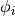
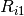
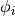
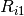

plotypus is a Python library and command line tool for modelling and plotting the light curves of intrinsic variable stars.
Certain types of variable stars can be used as standard candles, and are therefore essential in understanding the structure of the Universe. A property of classical Cepheid variable stars known as the period-luminosity relation was discovered in 1908 by Henrietta Swan Leavitt. This relation depends on knowing the period of oscillation and the mean magnitude of a sample of Cepheids at a similar distance. In order to obtain these two parameters for a given star, its brightness must be observed over a length of time so that a periodogram may be used to find its period, and regression to fit a periodic function to the observations.
plotypus provides both a command line interface and Python API for finding periods and fitting Fourier series to observations, and plotting the resulting light curves. A number of light curve parameters are obtained, including amplitudes  , phase shifts , aplitude ratios , and phase deltas
, phase shifts , aplitude ratios , and phase deltas  . Finding periods is computationally intensive, and therefore existing periods can be provided ahead of time, either obtained previously with plotypus, or externally, from sources such as the OGLE-III catalog.
. Finding periods is computationally intensive, and therefore existing periods can be provided ahead of time, either obtained previously with plotypus, or externally, from sources such as the OGLE-III catalog.